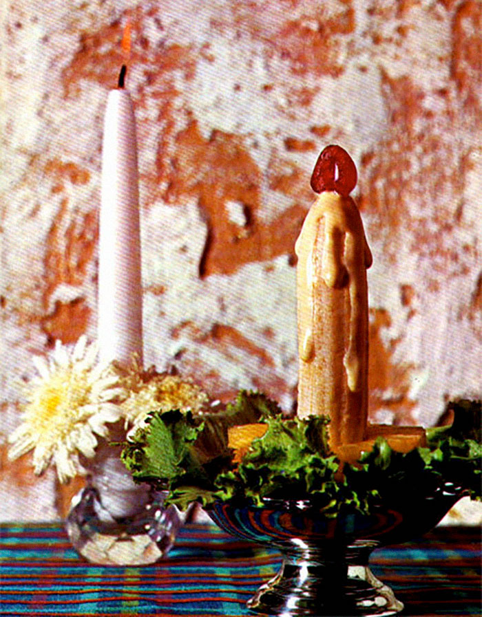

Banana and Pinapple Candles

Description
Candle salad is a vintage fruit salad that was popular in America from the 1920s through to the 1960s. The salad
is typically composed of lettuce, pineapple, banana, cherry, and either mayonnaise or, according to some recipes,
cottage cheese. Whipped cream may also be used. The ingredients are assembled to resemble a lit candle.
Ingredients
- 2 Bananas
- 2 Tbsp Lemon Juice
- 4 Fresh pinapple rings about an inch thick
- 2 Tbsp Mayonnaise
- Orange rind for candle handles
- Maraschino cherries
Steps
- Cut bananas in half (4 pieces) and dip in lemon Juice
- Cut a hole in pineapple the size of the Banana
- Arrange Bananas in Pineapple holes
- Attach lemon rind with half of a toothpick for the handle
and use the other half to attach the cherry on the top of
the banana for the flame
- Drizzle with mayonnaise to give the effect of candle wax
Back to homepage